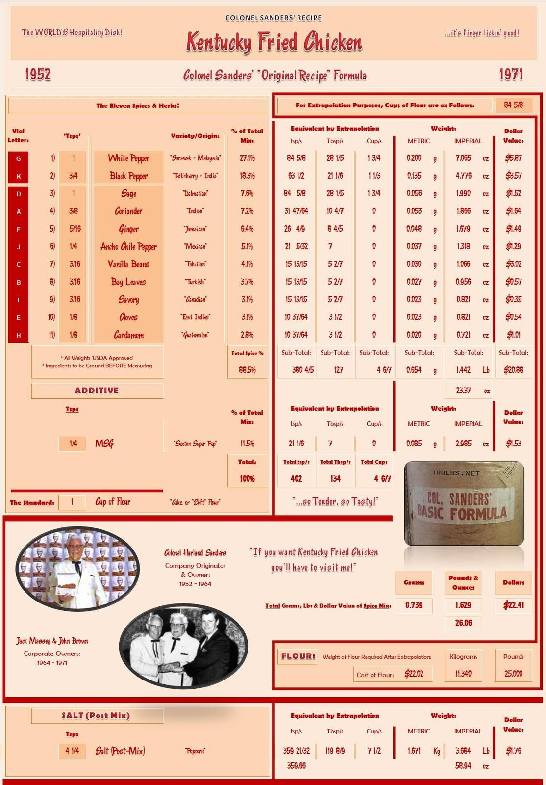
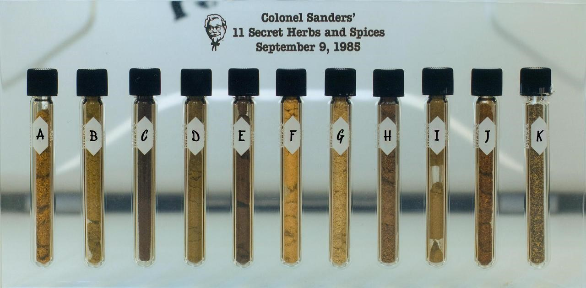

Kentucky Fried Chicken “Original Recipe”
- reverse-engineered at (now-defunct): http://kfc.forumup.co.uk/about718-kfc.htm
- or just buy it online: 99x chicken seasoning (Marion-Kay)
- if the chicken is brined, skip the salt
Ingredients
| Amount | Unit | Grams | Ingredient | Notes/Substitutions |
|---|---|---|---|---|
| 1 | kg | 1000 | Cake Flour | |
| 3 | Tbsp | 17.64 | White Pepper | |
| 1.5 | Tbsp | 11.9 | Black Pepper | |
| 2.5 | Tbsp | 4.94 | Sage | |
| 2.5 | tsp | 4.67 | Coriander | caraway? |
| 2.5 | tsp | 4.23 | Ginger | |
| 1.75 | tsp | 3.26 | Ancho Chile Pepper | red chili flakes |
| 1.5 | tsp | 2.65 | Vanilla Beans | |
| 1.5 | tsp | 2.38 | Bay Leaves | |
| 1.5 | tsp | 2.03 | Savory | thyme |
| 1 | tsp | 2.03 | Cloves | allspice |
| 1 | tsp | 1.76 | Cardamom | nutmeg + cinnamon |
| 2 | tsp | 7.5 | MSG | fish sauce? |
| 0.5 | cups | 147.35 | Salt | use 25% less = 1/3 cup = 110g |
Directions
- Double coat with the mixture above
- For the dip, use either:
- Buttermilk
- 2 parts milk, 1 part egg
- Beaten egg
- For the dip, use either:
Unedited Original Recipe
 
| Vial | Teaspoons | Ingredient | Origin | Scaled Tsp | Scaled Tbsp | Kilograms | Oz | Price ($) |
|---|---|---|---|---|---|---|---|---|
| 48 | Cake Flour | 4062 | 1354 | 11.34 | 400 | 25.00 | ||
| G | 1 | White Pepper | Sarawak (Malaysia) | 84.625 | 28.2 | 0.2 | 7.065 | 5.87 |
| K | 0.75 | Black Pepper | Tellicherry (India) | 63.5 | 21.16666667 | 0.135 | 4.776 | 3.57 |
| D | 1 | Sage | Dalmatia (Croatia) | 84.625 | 28.2 | 0.056 | 1.99 | 1.52 |
| A | 0.375 | Coriander | India | 31.734375 | 10.57142857 | 0.053 | 1.866 | 1.64 |
| F | 0.3125 | Ginger | Jamaica | 26.44444444 | 8.8 | 0.048 | 1.679 | 1.49 |
| J | 0.25 | Ancho Chile Pepper | Mexico | 21.15625 | 7 | 0.037 | 1.318 | 1.29 |
| C | 0.1875 | Vanilla Beans | Tahiti | 15.86666667 | 5.285714286 | 0.03 | 1.066 | 3.02 |
| B | 0.1875 | Bay Leaves | Turkey | 15.86666667 | 5.285714286 | 0.027 | 0.956 | 0.57 |
| I | 0.1875 | Savory | Canada | 15.86666667 | 5.285714286 | 0.023 | 0.821 | 0.35 |
| E | 0.125 | Cloves | East Indies | 10.578125 | 3.5 | 0.023 | 0.821 | 0.54 |
| H | 0.125 | Cardamom | Guatemala | 10.578125 | 3.5 | 0.02 | 0.721 | 1.01 |
| 0.25 | MSG | “Sexton Super Pep” | 21.16666667 | 7 | 0.085 | 2.985 | 1.53 | |
| 4.25 | Salt | Popcorn, Indiana (USA) | 359.65625 | 119.8888889 | 1.671 | 58.94 | 1.76 |
BONUS: Colonel’s Coleslaw
- ½ cup Miracle Whip (he said other brands turned the mixture grey)
- ½ cup tarragon vinegar (The Col used Heinz but it is hard to find these days)
- ½ cup sugar
- ¼ cup salad oil
- dash salt to taste
- 1 head cabbage, cored and chopped not shredded
- 1-2 carrots, shredded - optional
- 1/4 cup shredded onion - optional
- Chop the cabbage, grate the carrots and onion.
- Add other ingredients, mix well, cover well, let flavors meld over night in refrigerator.
- Some people say that carrots and onion were not in the original coleslaw recipe so feel free to leave them out.
- Chopped the cabbage, don’t shred it.
Notes:
- Chicago Tribune said that they found the original recipe
Directions from reddit:
Blend all spices together including the salt in spice grinder until mixed and powdery. Add to flour and mix by hand with whisk or in food processor.
Marinate chicken in buttermilk 4 hours to overnight. Remove chicken pieces from buttermilk, place in flour mixture, press down to ensure even coating. Deep Fry at 350 degrees for 8 minutes.
Note: KFC may not use buttermilk… I use it because it makes the chicken taste good. So yeah.